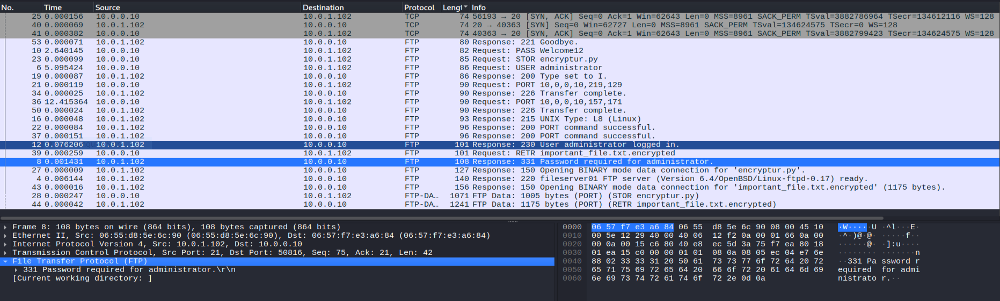
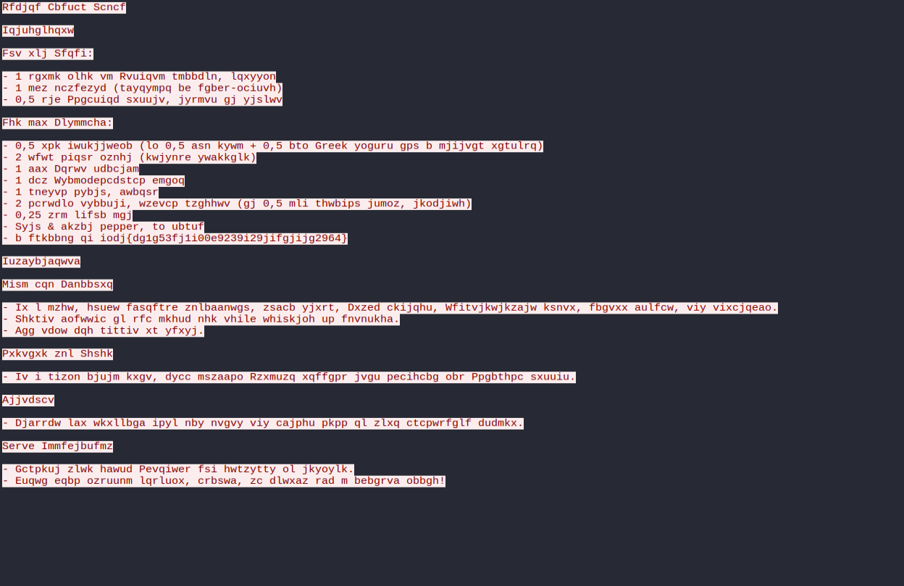
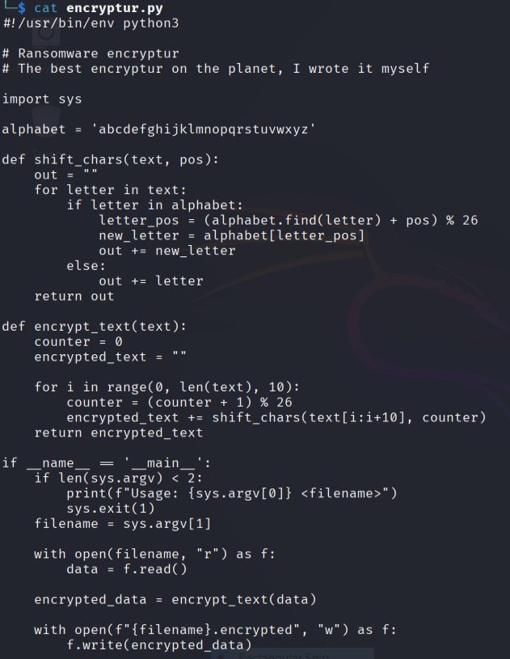
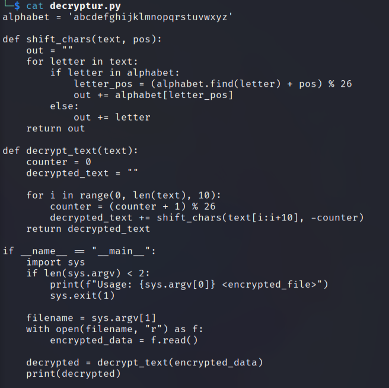
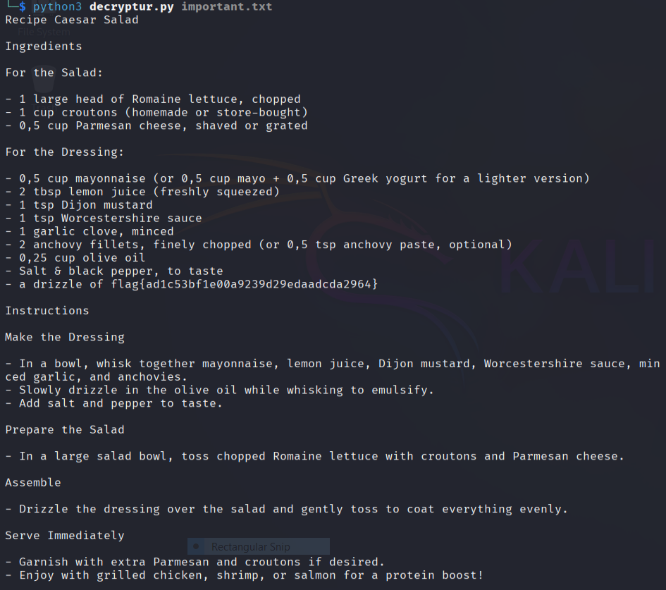

Welcome to my first writeup! This will be for an easy forensics challenge I solved during whyctf2025.
After downloading the challenge and uncompressing I was left with a .pcap file. Time to spin up wirehshark.
The challenge hint gave the goal of recovering and decrypting an important file. After sorting the packets by size I noticed two packets mentioned "important_file.txt.encrypted" and "encryptur.py". I followed their TCP streams and was able to assemble these files from the packets.
So we have the file, but it's encrypted and doesn't make much sense. I did some frequency analysis online but wasn't able to get any working matches. However, we also have what was used to encrypt the file. Let's crack it open and see if it's going to be of any use to us.
Of course it can! ... Alright I'm gonna keep it a hunnid with you big dawg, I'm not great at reading code like this yet, much less, using it to write a decryption for this. I fed it to chat GPT and it spat out this "decryptur.py" that I used with shame.
After running it we got this decrypted text, containing the flag :)
Lessons learned: Encrypt your traffic. And learn more Python.